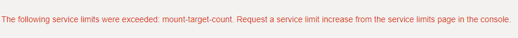
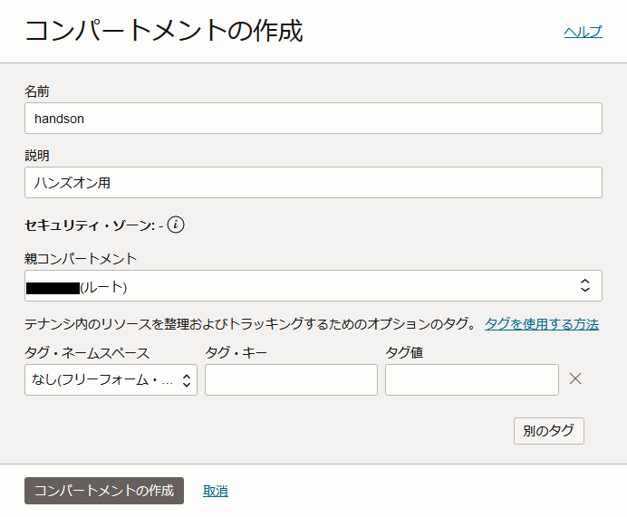
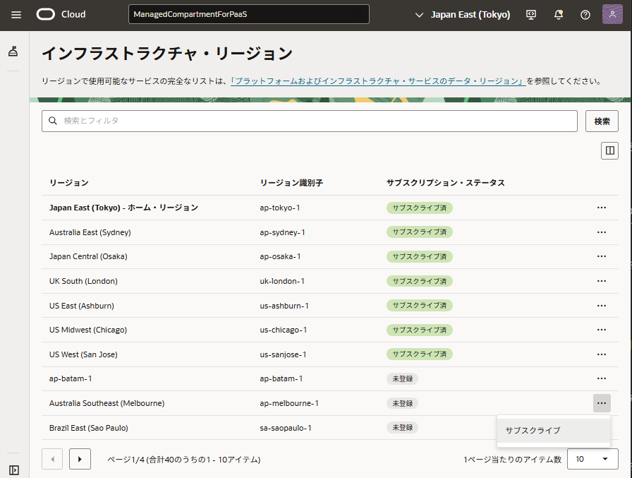
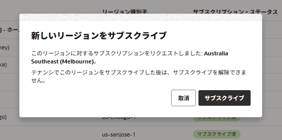
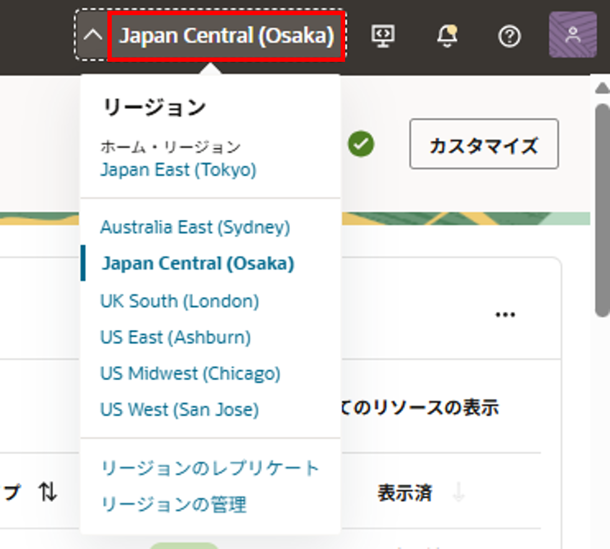

Oracle Cloud Infrastructure を使い始めるにあたって、コンソール画面にアクセスし、ログインを行います。
また、Oracle Cloud Infrastructure のサービスを利用するのにあたって必要なサービス・リミット、コンパートメントやポリシーなどのIAMリソースおよびリージョンについて、コンセプトをコンソール画面の操作を通じて学習し、理解します。
所要時間 : 約25分
前提条件 : 有効な Oracle Cloud Infrastructure のテナントと、アクセスのための有効なユーザーIDとパスワードがあること
注意 : チュートリアル内の画面ショットについては Oracle Cloud Infrastructure の現在のコンソール画面と異なっている場合があります。
参考動画： 本チュートリアルの内容をベースとした定期ハンズオンWebinarの録画コンテンツです。操作の流れや解説を動画で確認したい方はご参照ください。
1. サポートされるブラウザの確認
このチュートリアルでは、Oracle Cloud Infrastructure のコンソール画面からの操作を中心に作業を行います。
サポートされるブラウザを確認し、いずれかのブラウザをローカル環境にインストールしてください。
2. ログイン情報の確認
コンソールにアクセスするにあたり、ログイン情報の入力が必要になります。ログイン情報には以下のものが含まれます。
- テナント名(クラウド・アカウント名) - Oracle Cloud Infrastructure を契約したり、トライアル環境を申し込んだ際に払い出される一意のID
- ユーザー名 - ログインのためのユーザー名
- パスワード - ログインのためのパスワード
ログイン情報の入手方法は、ユーザーが作られるタイミングによって異なります。
テナントの最初のユーザーの場合
テナントの最初の管理者ユーザーに対しては、テナントが作成された際にシステムから通知メールが送付されています。
通知メールの中に、ランダムな一時パスワードを含む上記の内容が記入されていることを確認します。
通知メールには、上記のような内容が含まれています。
Cloud Account という箇所がテナント名、Temporary Password (モザイク部分) が、初期ユーザーの一時パスワードです
テナントの管理者ユーザーによって作成された2人め以降のユーザーの場合
テナントの管理者ユーザーによって作成された2人目以降のユーザーに対しても、同様にユーザー名と一時パスワード情報を使用してログインしてください。
ログイン情報が不明な場合は環境の管理者に問い合わせてください。
3. コンソールへのログイン
環境の管理者からコンソールへのログイン方法を指定されている場合は、管理者の指示に従ってください。以下は一般的にトライアルアカウントでログインする際の手順です。
-
ブラウザから、https://www.oracle.com/jp/index.html にアクセス。右上のアカウントを表示のボタンをクリックし、クラウド・アカウントの クラウドにサインイン を選択。（Oracleアカウントへのサインインではないので注意。）
-
Cloud Account Name にクラウド・アカウント名（テナンシー名）を入力し、Next をクリックします。これはユーザー名ではなく、クラウド環境の名前です。
- Oracle Cloudアカウントへのサインイン 画面で、ユーザー名とパスワードを入力し、サイン・イン をクリックします。
- ユーザー名：トライアル環境の初期ユーザーの場合は登録したメールアドレス
- パスワード：初期パスワード、もしくはリセット済みの場合は設定したパスワード
-
作成されたユーザーが初回にコンソールにログインした場合には、パスワードの変更が要求されます。旧パスワードと新パスワードを入力し、Save New Password ボタンを押します。
-
ログインが完了すると、Oracle Cloud Infrastructure のコンソール画面が表示されます。
-
コンソールの表示言語を日本語に変更する場合は、右上の地球儀マークのアイコンをクリックし、一番下の 日本語 を選択してください。
[参考] OCIのユーザー認証の仕組みについて
Oracle Cloud Infrastructureには、Oracle Cloud Infrastructure Identity and Access Management (OCI IAM)というユーザー管理、認証の仕組みがあります。OCI IAMはデフォルトでOracle Identity Cloud Service (IDCS) とフェデレーション設定が行われており、IDCSユーザーを使用してOCIコンソールなどにログインを行うことが可能です。
また、IDCSのOCI_AdministratorsグループとOCI IAMのAdministratorsグループではグループマッピングが構成済みなので、IDCSのOCI_Administratorsグループに所属しているユーザーはOCIの管理権限を持ちます。
一度コンソールからログアウトした場合や、コンソールのURLに直接アクセスした場合は、以下のようなログイン画面が表示されます。
この場合、左側の Single Sign-On (SSO) から Continue をクリックすると先ほどと同様のIDCSでのログインになります。
(注）環境によって、OCI IAMユーザーを利用する場合には、右側のOracle Cloud InfrastructureのUSER NAME／PASSWORD を使用してください

4. サービス制限の確認
Oracle Cloud Infrastructureのすべての環境(テナント)には、初期状態でサービス制限というリソース制限がかけられています。
このため、先ほどログインしたテナントでは、例えば可用性ドメインあたりに作成できるコンピュート・インスタンスの最大数が設定されており、それ以上の数のコンピュート・インスタンスを作成しようとすると、エラーメッセージと共に失敗します。
サービス制限によるインスタンス作成失敗メッセージの例
サービス制限は、例えば以下のようなリソースに対してかけられています。
- コンピュート・インスタンス - アベイラビリティ・ドメインあたりの仮想マシンやベアメタルインスタンスの数
- ブロック・ボリューム - アベイラビリティ・ドメインあたりのブロック・ボリュームの合計サイズや、バックアップの数
- データベース・サービス - アベイラビリティ・ドメインあたりのデータベース・インスタンスの数
- アイデンティティ & アクセス管理 - テナントあたりのユーザ、グループ、ポリシーの数など
- ロードバランサ - リージョンあたりのロードバランサーの数
- ネットワーク・コンポーネント - テナントあたりのVCNの数や、VCNあたりのサブネットの数など
- オブジェクト・ストレージ - リージョンあたりのバケット数や、オブジェクトあたりの最大データサイズなど
初期状態においてテナントにかけられているサービス制限の値は、契約の形態によって変わります。サービス制限がかけられているリソース・コンポーネントおよびその制限量については、Service Limits - Limits by Service を確認してください。
サービス制限の確認と引上げリクエスト
いくつかのリソースについてはOCIコンソールから現在の値と使用済みの値を確認できます。
-
コンソール左上のメニューをクリックしてメニューを表示し、一番下までスクロールします。ガバナンス → 制限、割当ておよび使用状況 をクリックします。
-
サービスごとにサービス制限の値、使用量や使用可能量を確認することができます。サービスリミットの引き上げをリクエストする際は、サービス制限の引上げ リンクをクリックします。
-
サービス制限の更新のリクエスト画面で、必要事項を記入して リクエストの送信 ボタンをクリックすると必要なリソースに対するサービス制限の引上げリクエストをあげることができます。作業完了の連絡は連絡先に入力したメールアドレスにメールで通知されます。
5. コンパートメントとポリシーの確認
Oracle Cloud Infrastructure には、テナントの内部を仕切る コンパートメント という区画を作成し、その中にリソースを配置したり、コンパートメントにポリシーを割り当てることを通じて権限を設定したりすることができます。
もし本番プロジェクトなどで本格的に Oracle Cloud Infrastructure を利用する場合には、コンパートメントやポリシーを管理者が利用計画にもとづいて適切に設計・設定する必要がありますが、チュートリアルの実行やアプリケーションの動作確認などの Proof-of-Concept を実施するような場合には、複雑なコンパートメントやポリシーの設定は不要で、初期状態で存在する管理者用のコンパートメントやポリシーをそのまま利用することも可能です。
本チュートリアルでは、作業を進めるにあたり必要なコンパートメントとポリシーが予め設定され、作業ユーザーはそのポリシーを持つグループに所属していることを前提に話を進めていきます。コンパートメントやポリシーの設計や設定方法については、IAM - Getting Started with Policies などを参考にしてください。
ここでは、よくあるケースにもとづいて、自身のユーザーに割り当てられているポリシーの内容と、そのポリシーが有効なコンパートメントを確認する作業を実施します。
ケース1 : トライアル環境などでテナントすべての管理権限を持っている場合
このケースにおいては、ログインしているユーザーが1つのテナントに対して全ての管理権限を持っているため、新しいコンパートメントやポリシーの作成を含む全ての作業を実施することができます。
以下はルート・コンパートメントの下にチュートリアル実施用のコンパートメントを1つ作成してその中にリソースを作成していく前提です。
-
コンソールメニューから アイデンティティ → コンパートメント を選択し、現在作成されているコンパートメントのリストを表示します。デフォルトでは、ルート・コンパートメント（「テナント名(ルート)」）と、ManagedCompartmentForPaaS というコンパートメントのみが存在します。

[Note] ManagedCompartmentForPaaS は、PaaSサービスが内部的に使用するためのコンパートメントです。このコンパートメントを変更、削除したりコンパートメント内のリソースを手動で変更、削除したりしないようにしてください。PaaSが正常に機能できなくなる可能性があります。 -
コンパートメントの作成 のボタンをクリックし、コンパートメント作成ウィンドウを開きます。以下の項目を入力し、左下の コンパートメントの作成 ボタンをクリックします。
- 名前 - 任意のコンパートメントの名前を入力します。ここでは「handson」としています。
- 説明 - このコンパートメントの説明を入力します。ここでは「ハンズオン用」としています。
-
親コンパートメント - ルートコンパートメント「テナント名(ルート)」が選択されていることを確認します。
-
コンパートメントができました。
ケース2 : 複数ユーザーで1つの環境を共有利用している場合
この場合は、利用する環境のポリシーやルールに応じて、適切なユーザーとコンパートメントを使用するようにしてください。
管理者の方は、各ユーザーごとにコンパートメントを分けて、コンパートメント内のみの権限を付与することも可能です。
もしチュートリアルのためにコンパートメントとポリシーを作成し使用したい場合には IAM - Managing Compartments を参考に作業を実施してください。
6. リージョンの確認
Oracle Cloud Infrastructure では、初めは指定したホームリージョンのみが有効になっていますが、同じテナントの中で世界中のリージョンのリソースを利用することができます。利用するリージョンは、コンソール画面から切り替えることができ、ホームリージョン以外のリージョンを使用したい場合はコンソール画面から有効化 (Subscribe) を行うことで、新しいリージョンの利用を開始することができるようになります。
新しいリージョンの追加は無償で実施できます。課金対象となるコンポーネントを作成しない限り、リージョンの有効化で課金が発生することはありません。
注）トライアル環境ではホームリージョン以外のリージョンをサブスクライブすることはできません。
以下では、利用している環境で有効化されているリージョンを確認していきます。
-
コンソール上部の リージョン名（ap-tokyo-1など）が記載されているメニューの▼をクリックし、リージョンの管理 を選択します。

-
現在サブスクライブされている Oracle Cloud Infrastructure のリージョンが、下部に一覧で表示されます。

この例では、ap-tokyo-1 (日本、東京) がホーム・リージョンで、ap-seoul-1 (韓国、ソウル) も有効化されていることがわかります。 このリージョンのサブスクライブ をクリックすることで、新規のリージョンを有効化することができます。
-
確認画面が出たら OK をクリックします。

-
複数のリージョンを有効化すると、リージョン 選択メニューでリージョンを切り替えて利用することができます。 Oracle Cloud Infrastructure のほとんどのリソースは、リージョン毎に独立して存在するため、それぞれのリソースを管理する場合には必ずリージョンを選択してから作業を行う必要があります。 例えば、フェニックス・リージョンで作成した仮想クラウド・ネットワーク(VCN)やインスタンスは、アッシュバーン・リージョンでは利用することができないため、REGION メニューでリージョンをフェニックスからアッシュバーンに切り替えると閲覧できなくなります。
-
一部のIAMリソース(コンパートメント、ユーザー、グループ、ポリシー)については、すべてのリージョンに跨って有効なグローバル・リソースです。 つまりユーザーを作成すると、そのユーザーはすべてのリージョンを利用することができるようになります。 コンパートメントについても、ひとつのコンパートメントはすべてのリージョンのリソースを中に含むことができます。
リージョンとコンパートメントの関係のイメージは以下のような形になります。

以上で、この章の作業は終了です。